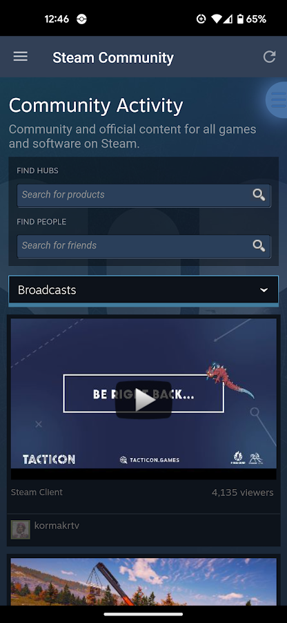
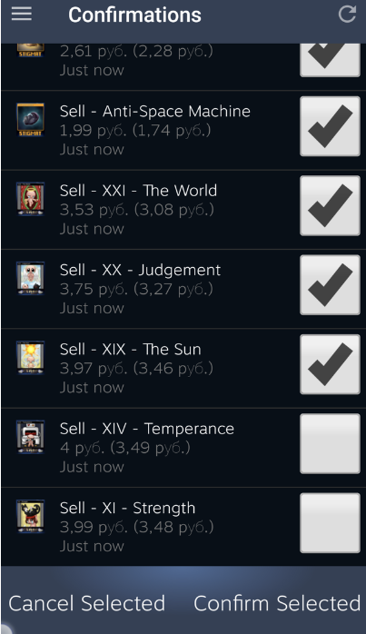
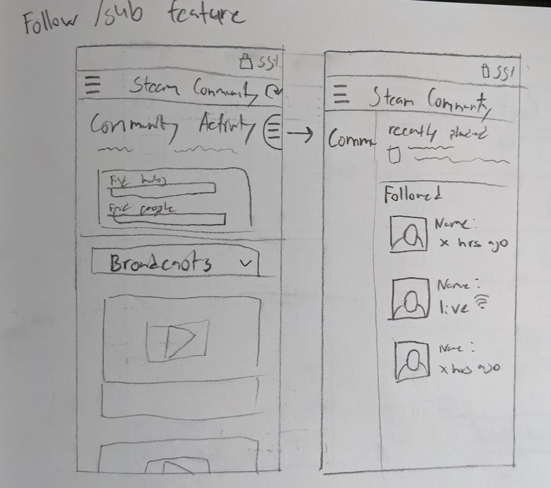
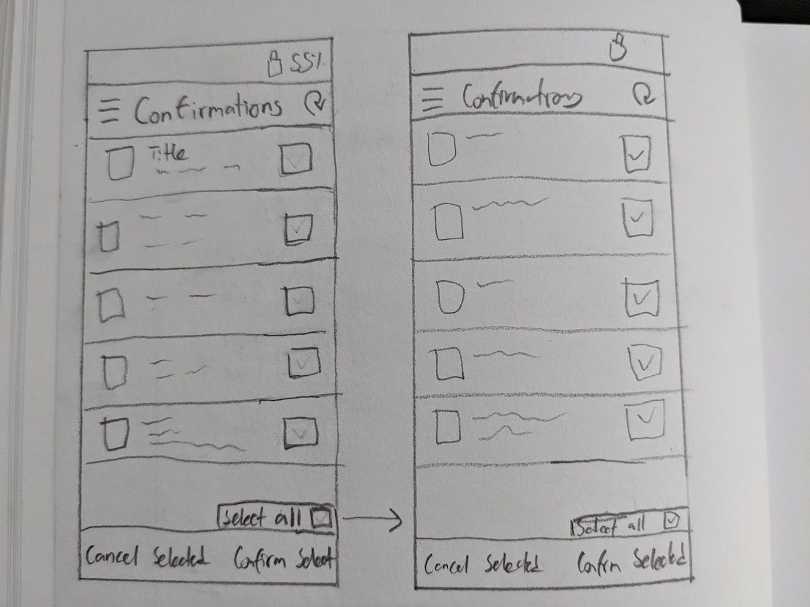

Steam feature design
PROJECT DESCRIPTION
Tools: UXpin
This project was individual and took place over three weeks. The goal was to develop a new feature for a mobile application out of a pool of 10 apps, for my project I chose the Steam mobile app.
First Steps

Screenshot of mobile streaming page

Image of Steam mobile Marketplace
Before doing any sketching or prototyping I conducted research on my own by doing short interviews with two current users of the app.My objectuve was to get a feel for what they view the app is for, what features they use most often, and areas where it could be improved. The two users and their most used features were Steam boradcasts page(Left) and the marketplace feature(Right).
User 1 found the broadcast section to be lacking since coming back to a stream they had previously watched relied on memory and use of the search bar. User 2 found it frustrating that market listings were dense on mobile when a large ammount of items are listed. I also had to familiarize myself with the design language of Steam mobile because having the feature integrate as seamlessly as possible into the existing interface would ensure continuity and so the user can adapt quickly.
Sketching solutions

Sketch of follow feature for broadcasts

Sketch of select all button for marketplace
For the second section of the project I had to sketch wireframes for two potential features to lay out where they would go and what it would look like. One of which involved a follow button pictured in the image above on the left, and a select all button shown in the image on the right, for when users confirm their Steam market listings.
Eventually I found that the broadcasting section of the app was a greater area for exploration because there were more ways the problem could be addressed in contrast to the market listing solution that could be fixed with one button.
Final prototypes
.png) Status of currently followed broadcasters
Status of currently followed broadcasters
.png) Follow button
Follow button
.png) Filter broadcasts by category
Filter broadcasts by category
In the final stages of the project I used the prototyping tool UXpin to create my design. The biggest challenge I faced was finding a way to expand upon my follow button in the top right because the solution was not that complex. I did this by giving the user more options to easily search for streams they might want to watch by introducing a set of filters as seen in the phone preview that they can toggle on and off. When a user finds a stream they like and follow, they can also access a tab shown in the top right, so that they know when a streamer is online in the future.
If you want to look at the prototype yourself it can be viewed at this link.
Challenges and takeaways
Overall this was an interesting project since I got to investigate what potential improvements could look like for an app that I use. The opportunity to use a different program for prototyping was both interesting and challenging since up untill that point I had only used Figma for prototyping related assignments.